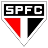

O clube nasceu na capital paulista a partir da união de dirigentes e jogadores do Clube Atlético Paulistano e da Associação Atlética das Palmeiras. Após enfrentar graves crises financeiras e uma interrupção nas atividades em 1935, o clube foi refundado no mesmo ano, dando início à trajetória que o consolidou como uma das maiores forças do país. Na década de 1960, iniciou a construção do seu próprio estádio, o Morumbi.